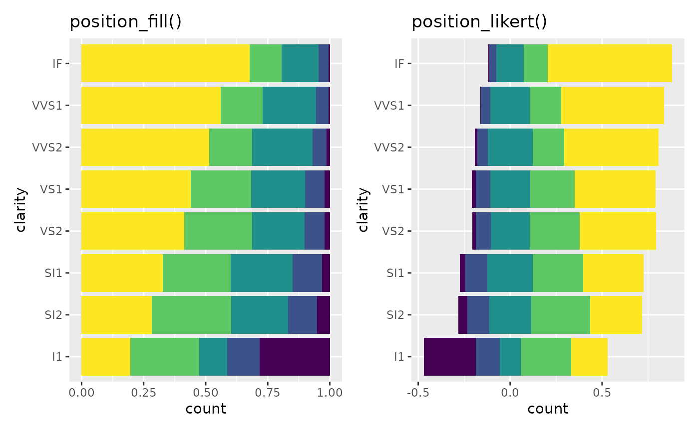
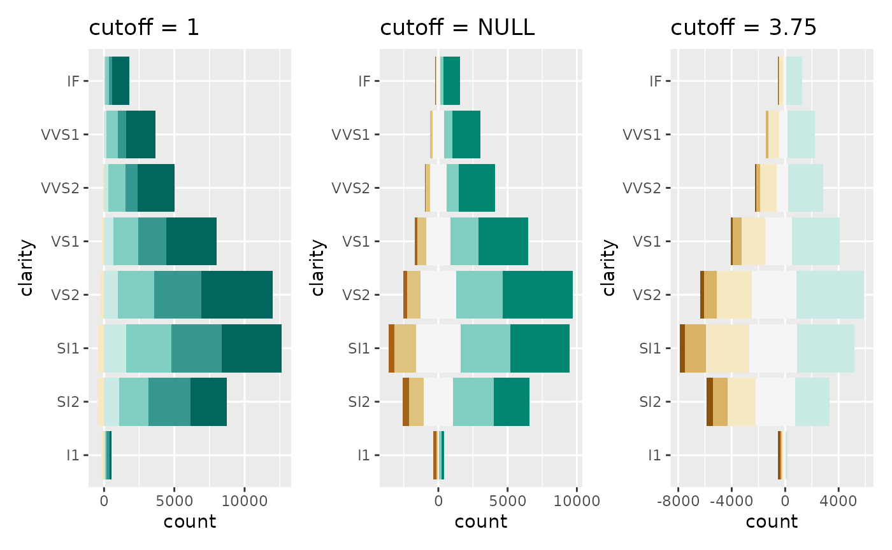
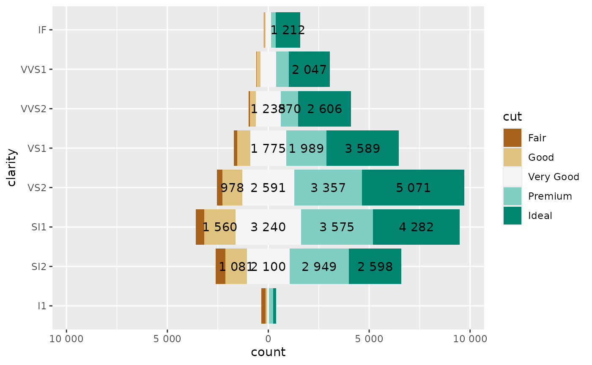
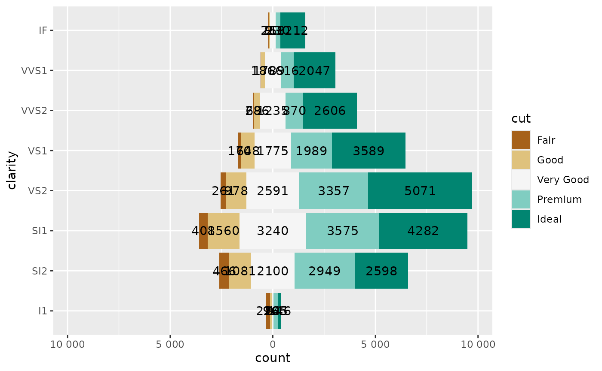
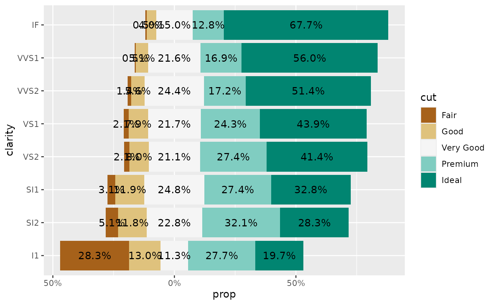
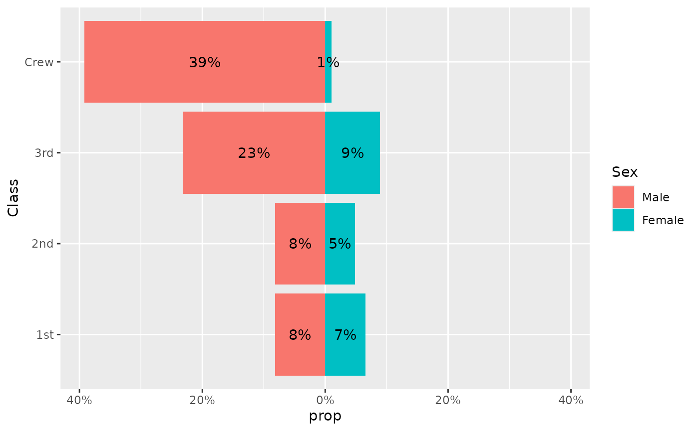

Geometries for diverging bar plots
Joseph Larmarange
Source:vignettes/geom_diverging.Rmd
geom_diverging.Rmd
library(ggstats)
#> Error in get(paste0(generic, ".", class), envir = get_method_env()) :
#> object 'type_sum.accel' not found
library(dplyr)
#>
#> Attaching package: 'dplyr'
#> The following objects are masked from 'package:stats':
#>
#> filter, lag
#> The following objects are masked from 'package:base':
#>
#> intersect, setdiff, setequal, union
library(ggplot2)
library(patchwork)Note : if you are looking for an all-in-one function to
display Likert-type items, please refer to gglikert() and
vignette("gglikert").
New positions
Diverging bar plots could be achieved using
position_diverging() or position_likert().
position_diverging() stacks bars on top of each other
and centers them around zero (the same number of categories are
displayed on each side).
base <-
ggplot(diamonds) +
aes(y = clarity, fill = cut) +
theme(legend.position = "none")
p_stack <-
base +
geom_bar(position = "stack") +
ggtitle("position_stack()")
p_diverging <-
base +
geom_bar(position = "diverging") +
ggtitle("position_diverging()")
p_stack + p_diverging
position_likert() is similar but uses proportions
instead of counts.
p_fill <-
base +
geom_bar(position = "fill") +
ggtitle("position_fill()")
p_likert <-
base +
geom_bar(position = "likert") +
ggtitle("position_likert()")
p_fill + p_likert
By default, the same number of categories is displayed on each side, i.e. if you have 4 categories, 2 will be displayed negatively and 2 positively. If you have an odd number of categories, half of the central category will be displayed negatively and half positively.
The center
could be changed with the cutoff
argument, representing the number of categories to be displayed
negatively: 2 to display negatively the two first
categories, 2.5 to display negatively the two first
categories and half of the third, 2.2 to display negatively
the two first categories and a fifth of the third.
p_1 <-
base +
geom_bar(position = position_diverging(cutoff = 1)) +
ggtitle("cutoff = 1")
p_2 <-
base +
geom_bar(position = position_diverging(cutoff = 2)) +
ggtitle("cutoff = 2")
p_null <-
base +
geom_bar(position = position_diverging(cutoff = NULL)) +
ggtitle("cutoff = NULL")
p_3.75 <-
base +
geom_bar(position = position_diverging(cutoff = 3.75)) +
ggtitle("cutoff = 3.75")
p_5 <-
base +
geom_bar(position = position_diverging(cutoff = 5)) +
ggtitle("cutoff = 5")
wrap_plots(p_1, p_2, p_null, p_3.75, p_5)
New scales
For a diverging bar plot, it is recommended to use a diverging
palette, as provided in the Brewer palettes. Sometimes, the number of
available colors is insufficient in the palette. In that case, you could
use pal_extender() or scale_fill_extended().
However, if you use a custom cutoff, it is also important
to change the center of the palette as well.
Therefore, for diverging bar plots, we recommend to use
scale_fill_likert().
wrap_plots(
p_1 + scale_fill_likert(cutoff = 1),
p_null + scale_fill_likert(),
p_3.75 + scale_fill_likert(cutoff = 3.75)
)
Improving axes
You may also want have centered axes. That could be easily achieved
with symmetric_limits().
You could also use label_number_abs() or
label_percent_abs() to display absolute numbers.
wrap_plots(
p_3.75,
p_3.75 +
scale_x_continuous(
limits = symmetric_limits,
labels = label_number_abs()
)
)
New geometries
To facilitate the creation of diverging bar plots, you could use
variants of geom_bar() and geom_text().
geom_diverging() & geom_diverging_text()
Let’s consider the following plot:
ggplot(diamonds) +
aes(y = clarity, fill = cut) +
geom_bar(position = "diverging") +
geom_text(
aes(
label =
label_number_abs(hide_below = 800)
(after_stat(count))
),
stat = "count",
position = position_diverging(.5)
) +
scale_fill_likert() +
scale_x_continuous(
labels = label_number_abs(),
limits = symmetric_limits
)
The same could be achieved quicker with geom_diverging()
and geom_diverging_text().
ggplot(diamonds) +
aes(y = clarity, fill = cut) +
geom_diverging() +
geom_diverging_text(hide_below = 800) +
scale_fill_likert() +
scale_x_continuous(
labels = label_number_abs(),
limits = symmetric_limits
)
#> Warning in ggplot2::geom_text(mapping = mapping, data = data, position =
#> position, : Ignoring unknown parameters: `hide_below`
geom_likert() & geom_likert_text()
geom_likert() and geom_likert_text() works
similarly. geom_likert_text() takes advantages of
stat_prop() for computing the proportions to be displayed
(see vignette("stat_prop")).
ggplot(diamonds) +
aes(y = clarity, fill = cut) +
geom_likert() +
geom_likert_text(hide_below = 0.10) +
scale_fill_likert() +
scale_x_continuous(
labels = label_percent_abs()
)
#> Warning in ggplot2::geom_text(mapping = mapping, data = data, position =
#> position, : Ignoring unknown parameters: `hide_below`
geom_pyramid() & geom_pyramid_text()
Finally, geom_pyramid() and
geom_pyramid_text() are variations adapted to display an
age-sex pyramid. It uses proportions of the total.
d <- Titanic |> as.data.frame()
ggplot(d) +
aes(y = Class, fill = Sex, weight = Freq) +
geom_pyramid() +
geom_pyramid_text() +
scale_x_continuous(
labels = label_percent_abs(),
limits = symmetric_limits
)